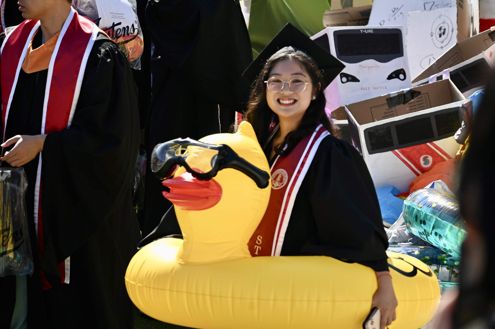

About

Lisa Ing is a cartoonist and duck-doodling enthusiast from Azusa, California. Her comics are full of joy, whimsy, and the challenge of building a sustainable creative life while technology races ahead around her in Silicon Valley.
She is the creator of Student Bill, a four-panel comic about a duck trying to stay afloat in the college pond, which ran weekly on Tinyview Comics for 43 comics from September 2025 to September 2026. Her Stanford Magazine story As Duck Would Have It won a Best of CASE District VII Award in Storytelling, and her work has appeared in the Cartoon Art Museum’s Fog City Comics Zine and the Stanford Storyboard Club Anthology.
Lisa graduated from Stanford in June 2026 with a B.S. in Computer Science, specializing in Visual Computing, Computer Graphics, and Animation, and is now pursuing her master’s in the Human-Computer Interaction track. She hopes to build tools that help artists tell their stories and keep human artists in the loop.